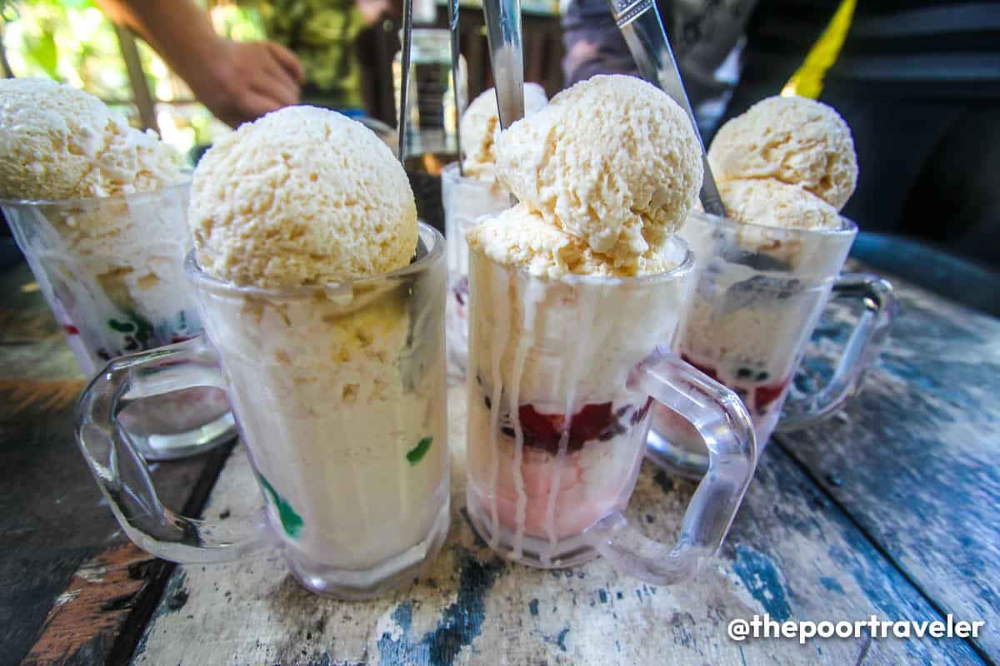

Halo Halo is a snack/dessert. Traditionally has shaved ice and evaporated milk with different toppings. I like Ciano Umok's special Halo Halo because instead of using shaved ice, they use shaved milk instead.
